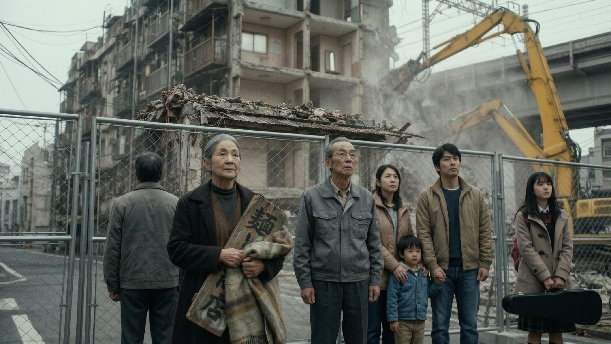
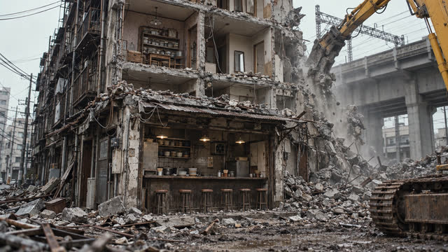
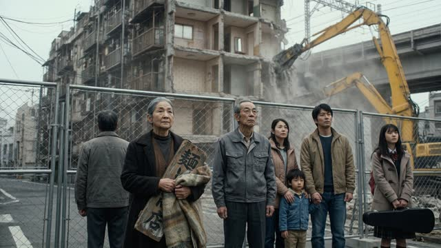

SHOT 01 · nw_s99a · nw_b1669 (10.42s -> 4.33s + 6.08s)
The small crowd at the barrier
“At the barrier on the street, a small crowd watches. The radio repairman. The family. The girl with the violin case.”

Selected option 2 (2730×1536) · Saved to directory only · Open full-size image ↗
Surrounding frames


Prompt & references
Create ONE horizontal widescreen 16:9 photorealistic cinematic film still for the Tokyo noir drama Nobody's Witness at beat nw_b1669, bridging the two supplied consecutive demolition-site references. At the wire-mesh street barrier across from the half-demolished Hive apartment block and yellow excavator under overcast winter sky, compose a medium-wide angle from slightly behind and to the side of the small quiet neighbourhood crowd watching the demolition: the older bespectacled radio repairman in his grey work jacket, the young Japanese mother and father holding their small son's hand, and the teenage schoolgirl in her tan duffle coat holding her black violin case at her side, matching their exact faces, coats and positions from the second reference. Focus on the repairman, family and schoolgirl watching the rubble and dust across the fence before the next shot centres on Kaneko holding her wooden shop sign. Muted grey winter daylight, grounded Ozu-inspired 35mm film photography, natural proportions and hands, full 16:9 landscape frame with comfortable headroom. No captions, subtitles, overlaid text or watermarks.
- Preceding shared still:
/film/img/s99a/531-six-old-stools.jpg - Following still:
/film/img/s99/157-the-sign.jpg